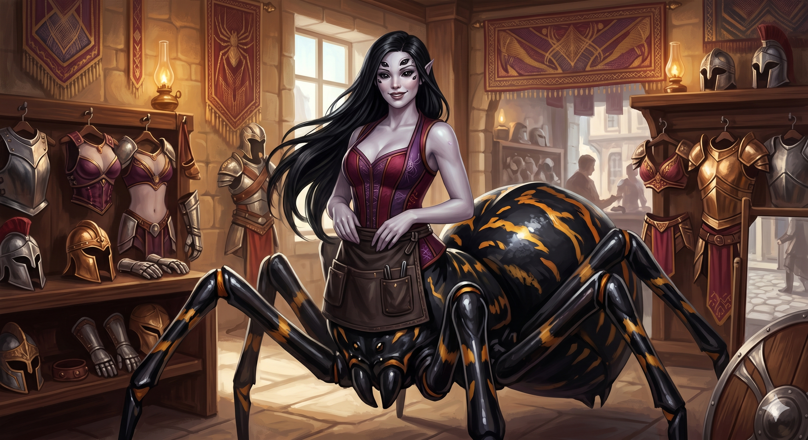

Appears in: Couch Potato Chaos
Profile

- Appears in: Couch Potato Chaos
- Aliases: Charlotte
- Race: Spider-woman (arachne)
- Personality: Charlotte is a business-minded spider woman who has successfully integrated into [Brightwind City](./location-brightwind-city.html)'s commercial life, running an armor shop that caters to adventurers with a distinctive philosophy: armor should be both durable and sexy. This dual focus on practicality and aesthetics suggests a craftsman who understands her market — adventurers in Etheria want protection that doesn’t compromise style. Her personal life is defined by a spectacularly casual attitude toward extreme arachnid biology: she killed her husband after mating and has produced 341 children, most of whom live in the Webwood Forest with their father (despite her having killed him). Her husband’s reported last words — maintaining “it was worth it” — frames their relationship as a darkly comedic inversion of spider-mating biology applied to a sentient species. Charlotte’s decision to live and work in Brightwind while her children remain in the Webwood suggests a degree of separation from the traditional spiderfolk lifestyle, preferring urban commerce to forest habitation.
- Backstory: Charlotte is a spider-woman — one of the arachne race, whose members combine humanoid upper bodies with arachnid lower halves. Unlike Karinla (who serves Penfold in Crisis) or Spindra (who is enslaved in Wilmarth), Charlotte appears to be a free and commercially successful member of her race, operating an armor shop in [Brightwind City](./location-brightwind-city.html). She married and produced an extraordinary 341 children — a number that reflects spider biology scaled to sentient life. The fate of her husband follows arachne mating traditions: she killed him after mating, though the fact that he survived long enough to comment that “it was worth it” suggests either that spiderfolk resurrection is in play or that the killing is more of a biological ritual than a permanent death. Most of her children live in the Webwood Forest with their father, implying either that he respawns and raises them, or that the Webwood serves as a spiderfolk community where her offspring have established themselves.
- Significant story events:
- Chapter 10 — The Webwood Forest (Chaos): The party encounters Charlotte’s family connections in the Webwood Forest, a dark and dangerous woodland between Bray and Brightwind filled with spider-based and bug-based mobs. Charlotte’s children and their father are discovered living here, establishing the forest as a spiderfolk habitat linked to her commercial life in the city.
- Notable Quotes:
[No direct quotes from Charlotte are recorded in the Notable Quotes section of the wiki. Her husband’s reported statement — “it was worth it” — is the most character-defining piece of dialogue associated with her, though it is attributed to him rather than to Charlotte herself. Any direct dialogue would need to be sourced from Chapter 10 of Couch Potato Chaos.]
- Relationships:
- Charlotte’s husband: Her mate, whom she killed after mating per spiderfolk tradition. Remarkably, he maintained it was worth it. He lives in the Webwood Forest raising most of their 341 children — suggesting either spiderfolk resurrection or that “killing” in this context is a biological ritual rather than a permanent death.
- Charlotte’s 341 children: An enormous brood, most of whom live in the Webwood Forest. This staggering number reflects the extreme fertility of spiderfolk biology applied to a sentient race.
- Tasha’s party: Customers at her armor shop in [Brightwind City](./location-brightwind-city.html). The party passes through during their journey and presumably purchases equipment from her.
- References: Couch Potato Chaos: Chapter 10 - The Webwood Forest, Characters